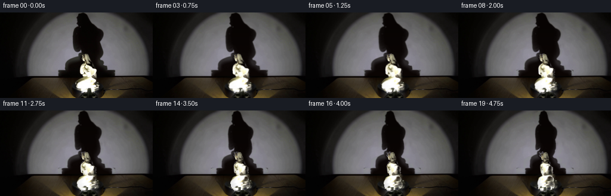
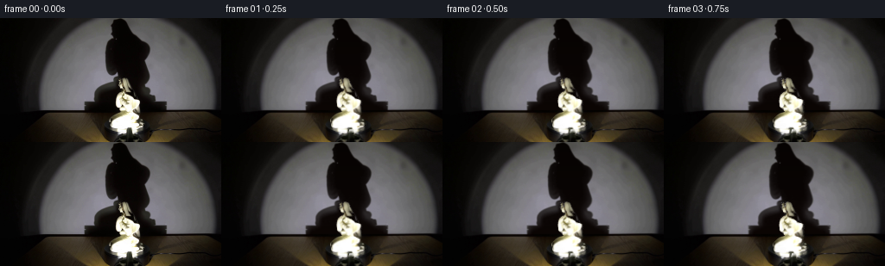

CODING AGENTS AS PIXEL WORLD MODELS
traex/GPT-6.1-Sol · 0083
点击播放 · 原生 RGB 像素
逐轮保存的候选
回放视频、检查图与代码变化。
每份候选均可单独播放。实际图片检查记录在下方工具轨迹中。
候选 01播放与检查图
点击播放 · 原生 RGB 像素

展开代码变化
--- 上一保存版本
+++ 本次保存版本
@@ -0,0 +1,225 @@
+from pathlib import Path
+import numpy as np
+import cv2
+from PIL import Image, ImageDraw
+from scipy.ndimage import gaussian_filter, gaussian_filter1d
+import artifact_io
+
+ROOT=Path(__file__).resolve().parent
+W,H=256,144
+S=4
+original=np.asarray(Image.open(ROOT/'first_frame.png').convert('RGB'))
+image=original.astype(np.float64)
+Y,X=np.mgrid[:H,:W]
+
+# A tracing of the porcelain contours, using the source image's RGB boundaries.
+parts=[
+ ('head',[(143,69.5),(146,70),(148,72),(148.5,75),(150,77),(151,79),(152,81),(150,82),(148,82),(149,83),(151,84),(152,85.5),(149,86),(146,85),(143,84),(142,82),(144,80.5),(142,79),(141,76),(141,73),(141,71)],4.5),
+ ('raised_hand',[(138,70.5),(140,71),(140,73),(139.5,74),(141,76),(141.5,78),(142,80),(142.5,81.5),(140,82),(138.5,80),(138,78),(137,77),(137,75),(138,74),(137,72)],2.1),
+ ('neck',[(143,82),(149,84),(149,86),(145,87),(146,89),(139,89),(137,88),(138,86),(141,85)],3.6),
+ ('bodice',[(139,86),(143,86),(146,88),(150,89),(152,91),(154,93),(157,94),(160,95),(162,96),(162.5,98),(161.5,102),(162,105),(162.5,108),(160,110),(157,109),(154,108),(151,110.5),(141,110),(140,108),(139,107),(139,104),(136,104),(134,102),(134,99),(133.5,96),(134,92),(135,89),(137,87)],8.0),
+ ('robe',[(143,108),(150,109),(154,110),(158,112),(161,113),(162,115),(161,117),(159,119),(160,121),(164,121),(166,123),(165,125),(166,126),(163,128),(160,129),(153,128),(148,128),(143,129),(139,129),(135,130),(131,130),(129,128),(128,126),(127,125),(127,123),(127,121),(126,121),(126,118),(127,116),(129,114),(131,112),(134,110),(139,109)],11.7),
+ ('left_foot',[(133,127),(146,127),(148,129),(147,133),(145,135),(139,135),(136,134),(135,132),(133,132),(131,130)],4.3),
+ ('right_foot',[(154,127),(160,127),(161,130),(161,132),(160,134),(156,135),(154,134),(154,131),(152,129)],3.5),
+]
+
+def poly_mask(poly,scale=4):
+ canvas=Image.new('L',(W*scale,H*scale)); d=ImageDraw.Draw(canvas)
+ d.polygon([(int(x*scale),int(y*scale)) for x,y in poly],fill=255)
+ return np.asarray(canvas.resize((W,H),Image.Resampling.LANCZOS)).astype(float)/255
+
+masks=[poly_mask(p[1]) for p in parts]
+statue=np.maximum.reduce(masks)
+
+# Estimate the unoccluded illumination from neighboring wall strips. This
+# removes the initial cast shadow rather than moving any fixed scene pixels.
+ys=np.array([0,5,10,15,20,25,30,35,40,45,50,55,60,65,70,75,80,85,90,95,98,104,106])
+ls=np.array([135,128,128,129,128,124,121,120,119,119,119,120,121,124,129,117,109,106,106,106,96,94,94])
+rs=np.array([142,149,152,156,160,165,174,177,176,173,171,173,173,176,175,174,175,180,182,186,191,193,193])
+left=np.interp(np.arange(107),ys,ls); right=np.interp(np.arange(107),ys,rs)
+wall=image.copy()
+xx=np.arange(W)
+for y in range(107):
+ l,r=left[y],right[y]
+ idx=np.r_[np.arange(max(0,int(l)-29),max(0,int(l)-3)),np.arange(min(W,int(r)+4),min(W,int(r)+30))]
+ u=(idx-145)/65
+ mat=np.stack([np.ones_like(u),u,u*u],axis=1)
+ coef=np.linalg.lstsq(mat,image[y,idx],rcond=None)[0]
+ coords=(xx-145)/65
+ pred=np.stack([np.ones(W),coords,coords*coords],1)@coef
+ wall[y]=np.clip(pred,0,255)
+# Smooth only the inferred field in the vertical direction; leave source texture.
+wall[:107]=gaussian_filter(wall[:107],(1.2,0,0))
+dark=np.stack([6+Y*.045,3+Y*.018,2+Y*.012],axis=2)
+a=np.clip((wall.mean(2)-image.mean(2))/(wall.mean(2)-dark.mean(2)+1e-5),0,1)
+envelope=np.zeros((H,W),float)
+for y in range(107):
+ envelope[y]=np.clip((xx-left[y]+5)/5,0,1)*np.clip((right[y]+5-xx)/5,0,1)
+a*=envelope
+# Bright object pixels must not make holes in the recovered shadow matte.
+hole=((statue>.03)&(Y<107)).astype(np.uint8)
+a=cv2.inpaint(a.astype(np.float32),hole,5,cv2.INPAINT_TELEA)
+a=np.clip(a,0,1)*envelope
+background=image.copy()
+background[:107]=np.clip(image[:107]+a[:107,None] if False else image[:107]+a[:107,:,None]*(wall[:107]-dark[:107]),0,255)
+# Source porcelain is removed from the underlying floor and black turntable.
+remove=(statue>.02).astype(np.uint8)
+filled=cv2.inpaint(original,remove,5,cv2.INPAINT_TELEA).astype(float)
+background[Y>=107]=filled[Y>=107]
+for y in range(107):
+ w=statue[y,:,None]
+ background[y]=background[y]*(1-w)+wall[y]*w
+# tiny contamination fringes around the source object
+rim=cv2.dilate(remove,np.ones((3,3),np.uint8))-remove
+for y in range(107):
+ weights=rim[y,:,None]*.65
+ background[y]=background[y]*(1-weights)+wall[y]*weights
+
+# A neutral porcelain surface is a closed, image-textured volume. Each profile
+# is an elliptical section, with depth and separate raised hand/feet inferred
+# from the visible silhouette. No external renderer is used.
+clouds=[]
+axis=148.0
+camera_tilt=.18
+for (name,poly,depth),mask in zip(parts,masks):
+ low=min(v[1] for v in poly); high=max(v[1] for v in poly)
+ rows=np.arange(low+.04,high,.12)
+ centers=[]; widths=[]; actualrows=[]
+ for row in rows:
+ crossings=[]
+ for (x1,y1),(x2,y2) in zip(poly,poly[1:]+poly[:1]):
+ if (y1<=row<y2) or (y2<=row<y1):
+ crossings.append(x1+(row-y1)*(x2-x1)/(y2-y1))
+ if len(crossings)>=2:
+ l,r=min(crossings),max(crossings)
+ actualrows.append(row); centers.append((l+r)/2); widths.append(max(.1,(r-l)/2))
+ rows=np.asarray(actualrows); centers=np.asarray(centers); widths=np.asarray(widths)
+ centers=gaussian_filter1d(centers,.8); widths=gaussian_filter1d(widths,.8)
+ ang=np.linspace(-np.pi,np.pi,720,endpoint=False)
+ rr,aa=np.meshgrid(rows,ang,indexing='ij')
+ cc=np.broadcast_to(centers[:,None],rr.shape)
+ ww=np.broadcast_to(widths[:,None],rr.shape)
+ dep=np.minimum(depth,ww*.92+.2)
+ # protruding hand and forward draped sleeves have slightly displaced centers
+ zmid={'head':0.0,'neck':.2,'raised_hand':3.2,'bodice':.0,'robe':-.2,'left_foot':1.8,'right_foot':1.3}[name]
+ xp=cc+ww*np.sin(aa)
+ zp=zmid+dep*np.cos(aa)
+ # Intrinsic vertical coordinates chosen to reproduce the source view.
+ # Use the front-facing depth for the source texture mapping even on the back.
+ frontz=zmid+dep*np.abs(np.cos(aa))
+ yy=rr+camera_tilt*(frontz-zp)
+ samplex=xp.astype(np.float32); sampley=rr.astype(np.float32)
+ col=cv2.remap(original,samplex,sampley,cv2.INTER_LINEAR,borderMode=cv2.BORDER_REPLICATE).astype(float)
+ # The reverse has porcelain of the same glaze but less front-painted detail.
+ broad=cv2.GaussianBlur(original,(0,0),1.4)
+ simple=cv2.remap(broad,samplex,sampley,cv2.INTER_LINEAR,borderMode=cv2.BORDER_REPLICATE).astype(float)
+ rear=np.clip((-np.cos(aa)+.12)/.35,0,1)
+ col=col*(1-rear[:,:,None])+simple*rear[:,:,None]
+ # Surface normals of the variable elliptical volume.
+ dxdr=np.gradient(xp,rows,axis=0)
+ dzdr=np.gradient(zp,rows,axis=0)
+ dxda=ww*np.cos(aa); dzda=-dep*np.sin(aa)
+ nx=-dzda
+ nz=dxda
+ ny=(dzda*dxdr-dxda*dzdr)
+ norm=np.sqrt(nx*nx+ny*ny+nz*nz)+1e-9
+ normals=np.stack([nx/norm,ny/norm,nz/norm],axis=-1)
+ clouds.append((xp.reshape(-1),yy.reshape(-1),zp.reshape(-1),col.reshape(-1,3),normals.reshape(-1,3),name))
+
+# Shadow volume profiles, recovered from the actual wall silhouette. The
+# spotlight is fixed. Rotation changes its projected cross sections in step
+# with the sculpture. The depth profile is the same round porcelain volume.
+shadow_left=np.zeros(H); shadow_right=np.zeros(H)
+for y in range(107):
+ inds=np.where(a[y]>.72)[0]
+ if len(inds):shadow_left[y],shadow_right[y]=inds.min(),inds.max()
+ else:shadow_left[y],shadow_right[y]=left[y],right[y]
+shadow_left[:107]=gaussian_filter1d(shadow_left[:107],1.0)
+shadow_right[:107]=gaussian_filter1d(shadow_right[:107],1.0)
+sc=(shadow_left+shadow_right)/2
+sr=np.maximum(1,(shadow_right-shadow_left)/2)
+
+# Keep an untouched floor/platform except for their asymmetric surface texture.
+hi_background=cv2.resize(background.astype(np.float32),(W*S,H*S),interpolation=cv2.INTER_CUBIC)
+light=np.array([-.33,-.12,1.0]); light/=np.linalg.norm(light)
+
+def draw_statue(degrees):
+ th=np.deg2rad(degrees); co=np.cos(th); si=np.sin(th)
+ allx=[]; ally=[]; allz=[]; allcolor=[]
+ for xp,yp,zp,col,norm,name in clouds:
+ xr=axis+(xp-axis)*co-zp*si
+ zr=(xp-axis)*si+zp*co
+ yr=yp+camera_tilt*(zp-zr)
+ # Fixed source: texture shading is modulated by the rotated normals.
+ n=norm.copy(); n[:,0]=norm[:,0]*co-norm[:,2]*si; n[:,2]=norm[:,0]*si+norm[:,2]*co
+ before=np.clip(norm@light,0,1)
+ after=np.clip(n@light,0,1)
+ shade=(.73+.27*after)/(.73+.27*before)
+ shade=np.clip(shade,.76,1.16)
+ colors=col*shade[:,None]
+ # Restrained moving glaze reflection; no new ambient scene elements.
+ spec_old=np.maximum(norm[:,2],0)**24
+ spec_new=np.maximum(n[:,2],0)**24
+ colors+=(spec_new-spec_old)[:,None]*6
+ allx.append(xr*S); ally.append(yr*S); allz.append(zr); allcolor.append(colors)
+ x=np.concatenate(allx); y=np.concatenate(ally); z=np.concatenate(allz); color=np.concatenate(allcolor)
+ ix=np.floor(x).astype(int); iy=np.floor(y).astype(int)
+ # Dense surface splats with a depth test. Back surfaces never overwrite front.
+ out=np.zeros((H*S*W*S,3),np.float32)
+ depth=np.full(H*S*W*S,-1e6,np.float32)
+ for ox,oy in [(0,0),(1,0),(0,1),(1,1)]:
+ u=ix+ox; v=iy+oy
+ valid=(u>=0)&(u<W*S)&(v>=0)&(v<H*S)
+ ids=v[valid]*(W*S)+u[valid]; zz=z[valid]
+ np.maximum.at(depth,ids,zz)
+ # Depth tie-resolution in increasing order lets closest surface win.
+ order=np.argsort(z)
+ for ox,oy in [(0,0),(1,0),(0,1),(1,1)]:
+ u=ix[order]+ox; v=iy[order]+oy
+ valid=(u>=0)&(u<W*S)&(v>=0)&(v<H*S)
+ ii=order[valid]; ids=v[valid]*(W*S)+u[valid]
+ vis=z[ii]>=depth[ids]-1e-4
+ out[ids[vis]]=color[ii[vis]]
+ mask=(depth>-1e5).reshape(H*S,W*S).astype(np.float32)
+ colors=out.reshape(H*S,W*S,3)
+ return colors,mask
+
+def moved_shadow(degrees):
+ th=np.deg2rad(degrees); co=np.cos(th); si=np.sin(th)
+ # Projected width of an elliptical section, not a flat image scaling.
+ widthfactor=np.sqrt(co*co+(.62*si)**2)
+ newc=147+(sc-147)*co
+ # asymmetric bends and raised sleeves shift gently as they pass the light
+ intrinsic=np.interp(np.arange(H),[0,15,35,55,65,75,85,100,106,143],[0,.5,.2,0,1,1.8,.8,0,0,0])
+ newc-=intrinsic*si*2.1
+ mapx=((X-newc[:,None])/widthfactor+sc[:,None]).astype(np.float32)
+ mapy=Y.astype(np.float32)
+ sh=cv2.remap(a.astype(np.float32),mapx,mapy,cv2.INTER_LINEAR,borderMode=cv2.BORDER_CONSTANT)
+ # The soft fixed-light penumbra follows the moving silhouette.
+ sh=gaussian_filter(sh,.25)
+ return np.clip(sh,0,1)
+
+def generate():
+ frames=[original.copy()]
+ for i in range(1,20):
+ # Uniform clockwise motion, 13.2 degrees per second.
+ degrees=i*3.3
+ sh=moved_shadow(degrees)
+ base=background.copy()
+ base[:107]=base[:107]*(1-sh[:107,:,None])+dark[:107]*sh[:107,:,None]
+ canvas=cv2.resize(base.astype(np.float32),(W*S,H*S),interpolation=cv2.INTER_CUBIC)
+ colors,mask=draw_statue(degrees)
+ canvas=canvas*(1-mask[:,:,None])+colors*mask[:,:,None]
+ frame=cv2.resize(canvas,(W,H),interpolation=cv2.INTER_AREA)
+ frames.append(np.clip(np.rint(frame),0,255).astype(np.uint8))
+ frames=np.stack(frames)
+ artifact_io.save(frames,ROOT)
+ tmp=ROOT/'.tmp';tmp.mkdir(exist_ok=True)
+ Image.fromarray(np.clip(background,0,255).astype(np.uint8)).save(tmp/'background.png')
+ Image.fromarray(np.clip(a*255,0,255).astype(np.uint8)).save(tmp/'shadow.png')
+ np.save(tmp/'statue_mask.npy',statue)
+ return frames
+
+if __name__=='__main__':
+ f=generate()
+ print('Saved',f.shape,f.dtype,'first-frame-identical:',np.array_equal(f[0],original))
候选 02播放与检查图
点击播放 · 原生 RGB 像素

展开代码变化
--- 上一保存版本
+++ 本次保存版本
@@ -61,7 +61,7 @@
a=cv2.inpaint(a.astype(np.float32),hole,5,cv2.INPAINT_TELEA)
a=np.clip(a,0,1)*envelope
background=image.copy()
-background[:107]=np.clip(image[:107]+a[:107,None] if False else image[:107]+a[:107,:,None]*(wall[:107]-dark[:107]),0,255)
+background[:107]=np.clip(image[:107]+a[:107,:,None]*(wall[:107]-dark[:107]),0,255)
# Source porcelain is removed from the underlying floor and black turntable.
remove=(statue>.02).astype(np.uint8)
filled=cv2.inpaint(original,remove,5,cv2.INPAINT_TELEA).astype(float)
@@ -140,7 +140,6 @@
sr=np.maximum(1,(shadow_right-shadow_left)/2)
# Keep an untouched floor/platform except for their asymmetric surface texture.
-hi_background=cv2.resize(background.astype(np.float32),(W*S,H*S),interpolation=cv2.INTER_CUBIC)
light=np.array([-.33,-.12,1.0]); light/=np.linalg.norm(light)
def draw_statue(degrees):
@@ -207,10 +206,21 @@
sh=moved_shadow(degrees)
base=background.copy()
base[:107]=base[:107]*(1-sh[:107,:,None])+dark[:107]*sh[:107,:,None]
- canvas=cv2.resize(base.astype(np.float32),(W*S,H*S),interpolation=cv2.INTER_CUBIC)
+ # Rotate the faint surface reflection of the black disk in its fixed
+ # elliptical footprint. Its silhouette and the floor stay stationary.
+ th=np.deg2rad(degrees)
+ pu=(X-148)/23.; pv=(Y-141)/5.5
+ disk=np.clip((.95-pu*pu-pv*pv)*8,0,1)*(Y>=136)
+ tx=(148+23*(pu*np.cos(th)-pv*np.sin(th))).astype(np.float32)
+ ty=(141+5.5*(pu*np.sin(th)+pv*np.cos(th))).astype(np.float32)
+ turn=cv2.remap(background.astype(np.float32),tx,ty,cv2.INTER_LINEAR,borderMode=cv2.BORDER_REPLICATE)
+ base=base*(1-disk[:,:,None])+turn*disk[:,:,None]
colors,mask=draw_statue(degrees)
- canvas=canvas*(1-mask[:,:,None])+colors*mask[:,:,None]
- frame=cv2.resize(canvas,(W,H),interpolation=cv2.INTER_AREA)
+ # Downsample just the rotating volume, preserving the source pixels
+ # exactly everywhere outside the actual moving parts.
+ coverage=cv2.resize(mask,(W,H),interpolation=cv2.INTER_AREA)
+ surface=cv2.resize(colors*mask[:,:,None],(W,H),interpolation=cv2.INTER_AREA)
+ frame=base*(1-coverage[:,:,None])+surface
frames.append(np.clip(np.rint(frame),0,255).astype(np.uint8))
frames=np.stack(frames)
artifact_io.save(frames,ROOT)
候选 03播放与检查图
可观测工具轨迹
实际执行的命令与返回图片。
命令 1exit 0
/bin/bash -lc 'ls -la && cat prompt.txt && cat GENERATION_RULES.md'
命令 2exit 0
/bin/bash -lc "cat artifact_io.py && python - <<'PY'
from PIL import Image
import numpy as np
im=np.array(Image.open('first_frame.png')); print('image',im.shape)
a=im.astype(float); l=a.mean(2)
chars=' .,:;ox%#@'
for y in range(0,144,3):
print(''.join(chars[min(9,int(l[y:y+3,x:x+3].mean()/256*10))] for x in range(0,256,3)))
print('rgb grid')
for y in range(0,144,12):
print(y,[tuple(im[y:y+12,x:x+16].mean((0,1)).astype(int)) for x in range(0,256,16)])
PY"命令 3exit 0
/bin/bash -lc "python - <<'PY'
import numpy as np
from PIL import Image
im=np.array(Image.open('first_frame.png')); l=im.mean(2)
print('STATUE (100:180,65:144) one char/pixel')
ch=' .:-=+*#%@'
for y in range(65,144):
print(f'{y:3} '+''.join(ch[min(9,int(v/256*10))] for v in l[y,100:180]))
print('bright silhouette')
for y in range(66,142):
print(f'{y:3} '+''.join('##' if v>170 else '++' if v>90 else ' ' for v in l[y,120:173]))
PY"命令 4exit 0
/bin/bash -lc "python - <<'PY'
from PIL import Image
import numpy as np
im=np.array(Image.open('first_frame.png')); l=im.mean(2)
for y in [0,5,10,15,20,25,30,35,40,45,50,55,60,65,70,75,80,85,90,95,100,104,105,106,107,108,110,115,120,125,130,135,140,143]:
print(y,' '.join(f'{x}:{int(l[y,x])}' for x in range(95,191,3)))
PY"命令 5exit 0
/bin/bash -lc "python - <<'PY'
import numpy as np
from PIL import Image
im=np.array(Image.open('first_frame.png')); L=im.mean(2)
# threshold contour warm porcel
for y in range(66,138):
s=[]
for x in range(125,168):
r,g,b=im[y,x].astype(int)
s.append('#' if L[y,x]>190 else '+' if L[y,x]>70 and r-b>8 else '.' if L[y,x]>70 else ' ')
print(f'{y:3} '+''.join(s))
print('shadow')
for y in range(0,108,2):
print(f'{y:3} '+''.join(' ' if L[y,x]>70 else '#' if L[y,x]<20 else '+' for x in range(85,195)))
PY"命令 6exit 0
/bin/bash -lc "python - <<'PY'
import scipy, cv2, numpy as np
from PIL import Image
im=np.array(Image.open('first_frame.png')).astype(float); L=im.mean(2)
Y,X=np.mgrid[:144,:256]
# contour highlit roi
for y in range(69,136):
if y<86: start,end=136,154
elif y<110:start,end=132,165
else:start,end=124,167
a=np.where((L[y,start:end]>45)&((im[y,start:end,0]-im[y,start:end,2])>5))[0]+start
groups=np.split(a,np.where(np.diff(a)>1)[0]+1)
print(y,[(int(g.min()),int(g.max())) for g in groups if len(g)])
PY"命令 7exit 0
/bin/bash -lc "cat > generate.py <<'PY'
from pathlib import Path
import numpy as np
import cv2
from PIL import Image, ImageDraw
from scipy.ndimage import gaussian_filter, gaussian_filter1d
import artifact_io
ROOT=Path(__file__).resolve().parent
W,H=256,144
S=4
original=np.asarray(Image.open(ROOT/'first_frame.png').convert('RGB'))
image=original.astype(np.float64)
Y,X=np.mgrid[:H,:W]
# A tracing of the porcelain contours, using the source image's RGB boundaries.
parts=[
('head',[(143,69.5),(146,70),(148,72),(148.5,75),(150,77),(151,79),(152,81),(150,82),(148,82),(149,83),(151,84),(152,85.5),(149,86),(146,85),(143,84),(142,82),(144,80.5),(142,79),(141,76),(141,73),(141,71)],4.5),
('raised_hand',[(138,70.5),(140,71),(140,73),(139.5,74),(141,76),(141.5,78),(142,80),(142.5,81.5),(140,82),(138.5,80),(138,78),(137,77),(137,75),(138,74),(137,72)],2.1),
('neck',[(143,82),(149,84),(149,86),(145,87),(146,89),(139,89),(137,88),(138,86),(141,85)],3.6),
('bodice',[(139,86),(143,86),(146,88),(150,89),(152,91),(154,93),(157,94),(160,95),(162,96),(162.5,98),(161.5,102),(162,105),(162.5,108),(160,110),(157,109),(154,108),(151,110.5),(141,110),(140,108),(139,107),(139,104),(136,104),(134,102),(134,99),(133.5,96),(134,92),(135,89),(137,87)],8.0),
('robe',[(143,108),(150,109),(154,110),(158,112),(161,113),(162,115),(161,117),(159,119),(160,121),(164,121),(166,123),(165,125),(166,126),(163,128),(160,129),(153,128),(148,128),(143,129),(139,129),(135,130),(131,130),(129,128),(128,126),(127,125),(127,123),(127,121),(126,121),(126,118),(127,116),(129,114),(131,112),(134,110),(139,109)],11.7),
('left_foot',[(133,127),(146,127),(148,129),(147,133),(145,135),(139,135),(136,134),(135,132),(133,132),(131,130)],4.3),
('right_foot',[(154,127),(160,127),(161,130),(161,132),(160,134),(156,135),(154,134),(154,131),(152,129)],3.5),
]
def poly_mask(poly,scale=4):
canvas=Image.new('L',(W*scale,H*scale)); d=ImageDraw.Draw(canvas)
d.polygon([(int(x*scale),int(y*scale)) for x,y in poly],fill=255)
return np.asarray(canvas.resize((W,H),Image.Resampling.LANCZOS)).astype(float)/255
masks=[poly_mask(p[1]) for p in parts]
statue=np.maximum.reduce(masks)
# Estimate the unoccluded illumination from neighboring wall strips. This
# removes the initial cast shadow rather than moving any fixed scene pixels.
ys=np.array([0,5,10,15,20,25,30,35,40,45,50,55,60,65,70,75,80,85,90,95,98,104,106])
ls=np.array([135,128,128,129,128,124,121,120,119,119,119,120,121,124,129,117,109,106,106,106,96,94,94])
rs=np.array([142,149,152,156,160,165,174,177,176,173,171,173,173,176,175,174,175,180,182,186,191,193,193])
left=np.interp(np.arange(107),ys,ls); right=np.interp(np.arange(107),ys,rs)
wall=image.copy()
xx=np.arange(W)
for y in range(107):
l,r=left[y],right[y]
idx=np.r_[np.arange(max(0,int(l)-29),max(0,int(l)-3)),np.arange(min(W,int(r)+4),min(W,int(r)+30))]
u=(idx-145)/65
mat=np.stack([np.ones_like(u),u,u*u],axis=1)
coef=np.linalg.lstsq(mat,image[y,idx],rcond=None)[0]
coords=(xx-145)/65
pred=np.stack([np.ones(W),coords,coords*coords],1)@coef
wall[y]=np.clip(pred,0,255)
# Smooth only the inferred field in the vertical direction; leave source texture.
wall[:107]=gaussian_filter(wall[:107],(1.2,0,0))
dark=np.stack([6+Y*.045,3+Y*.018,2+Y*.012],axis=2)
a=np.clip((wall.mean(2)-image.mean(2))/(wall.mean(2)-dark.mean(2)+1e-5),0,1)
envelope=np.zeros((H,W),float)
for y in range(107):
envelope[y]=np.clip((xx-left[y]+5)/5,0,1)*np.clip((right[y]+5-xx)/5,0,1)
a*=envelope
# Bright object pixels must not make holes in the recovered shadow matte.
hole=((statue>.03)&(Y<107)).astype(np.uint8)
a=cv2.inpaint(a.astype(np.float32),hole,5,cv2.INPAINT_TELEA)
a=np.clip(a,0,1)*envelope
background=image.copy()
background[:107]=np.clip(image[:107]+a[:107,None] if False else image[:107]+a[:107,:,None]*(wall[:107]-dark[:107]),0,255)
# Source porcelain is removed from the underlying floor and black turntable.
remove=(statue>.02).astype(np.uint8)
filled=cv2.inpaint(original,remove,5,cv2.INPAINT_TELEA).astype(float)
background[Y>=107]=filled[Y>=107]
for y in range(107):
w=statue[y,:,None]
background[y]=background[y]*(1-w)+wall[y]*w
# tiny contamination fringes around the source object
rim=cv2.dilate(remove,np.ones((3,3),np.uint8))-remove
for y in range(107):
weights=rim[y,:,None]*.65
background[y]=background[y]*(1-weights)+wall[y]*weights
# A neutral porcelain surface is a closed, image-textured volume. Each profile
# is an elliptical section, with depth and separate raised hand/feet inferred
# from the visible silhouette. No external renderer is used.
clouds=[]
axis=148.0
camera_tilt=.18
for (name,poly,depth),mask in zip(parts,masks):
low=min(v[1] for v in poly); high=max(v[1] for v in poly)
rows=np.arange(low+.04,high,.12)
centers=[]; widths=[]; actualrows=[]
for row in rows:
crossings=[]
for (x1,y1),(x2,y2) in zip(poly,poly[1:]+poly[:1]):
if (y1<=row<y2) or (y2<=row<y1):
crossings.append(x1+(row-y1)*(x2-x1)/(y2-y1))
if len(crossings)>=2:
l,r=min(crossings),max(crossings)
actualrows.append(row); centers.append((l+r)/2); widths.append(max(.1,(r-l)/2))
rows=np.asarray(actualrows); centers=np.asarray(centers); widths=np.asarray(widths)
centers=gaussian_filter1d(centers,.8); widths=gaussian_filter1d(widths,.8)
ang=np.linspace(-np.pi,np.pi,720,endpoint=False)
rr,aa=np.meshgrid(rows,ang,indexing='ij')
cc=np.broadcast_to(centers[:,None],rr.shape)
ww=np.broadcast_to(widths[:,None],rr.shape)
dep=np.minimum(depth,ww*.92+.2)
# protruding hand and forward draped sleeves have slightly displaced centers
zmid={'head':0.0,'neck':.2,'raised_hand':3.2,'bodice':.0,'robe':-.2,'left_foot':1.8,'right_foot':1.3}[name]
xp=cc+ww*np.sin(aa)
zp=zmid+dep*np.cos(aa)
# Intrinsic vertical coordinates chosen to reproduce the source view.
# Use the front-facing depth for the source texture mapping even on the back.
frontz=zmid+dep*np.abs(np.cos(aa))
yy=rr+camera_tilt*(frontz-zp)
samplex=xp.astype(np.float32); sampley=rr.astype(np.float32)
col=cv2.remap(original,samplex,sampley,cv2.INTER_LINEAR,borderMode=cv2.BORDER_REPLICATE).astype(float)
# The reverse has porcelain of the same glaze but less front-painted detail.
broad=cv2.GaussianBlur(original,(0,0),1.4)
simple=cv2.remap(broad,samplex,sampley,cv2.INTER_LINEAR,borderMode=cv2.BORDER_REPLICATE).astype(float)
rear=np.clip((-np.cos(aa)+.12)/.35,0,1)
col=col*(1-rear[:,:,None])+simple*rear[:,:,None]
# Surface normals of the variable elliptical volume.
dxdr=np.gradient(xp,rows,axis=0)
dzdr=np.gradient(zp,rows,axis=0)
dxda=ww*np.cos(aa); dzda=-dep*np.sin(aa)
nx=-dzda
nz=dxda
ny=(dzda*dxdr-dxda*dzdr)
norm=np.sqrt(nx*nx+ny*ny+nz*nz)+1e-9
normals=np.stack([nx/norm,ny/norm,nz/norm],axis=-1)
clouds.append((xp.reshape(-1),yy.reshape(-1),zp.reshape(-1),col.reshape(-1,3),normals.reshape(-1,3),name))
# Shadow volume profiles, recovered from the actual wall silhouette. The
# spotlight is fixed. Rotation changes its projected cross sections in step
# with the sculpture. The depth profile is the same round porcelain volume.
shadow_left=np.zeros(H); shadow_right=np.zeros(H)
for y in range(107):
inds=np.where(a[y]>.72)[0]
if len(inds):shadow_left[y],shadow_right[y]=inds.min(),inds.max()
else:shadow_left[y],shadow_right[y]=left[y],right[y]
shadow_left[:107]=gaussian_filter1d(shadow_left[:107],1.0)
shadow_right[:107]=gaussian_filter1d(shadow_right[:107],1.0)
sc=(shadow_left+shadow_right)/2
sr=np.maximum(1,(shadow_right-shadow_left)/2)
# Keep an untouched floor/platform except for their asymmetric surface texture.
hi_background=cv2.resize(background.astype(np.float32),(W*S,H*S),interpolation=cv2.INTER_CUBIC)
light=np.array([-.33,-.12,1.0]); light/=np.linalg.norm(light)
def draw_statue(degrees):
th=np.deg2rad(degrees); co=np.cos(th); si=np.sin(th)
allx=[]; ally=[]; allz=[]; allcolor=[]
for xp,yp,zp,col,norm,name in clouds:
xr=axis+(xp-axis)*co-zp*si
zr=(xp-axis)*si+zp*co
yr=yp+camera_tilt*(zp-zr)
# Fixed source: texture shading is modulated by the rotated normals.
n=norm.copy(); n[:,0]=norm[:,0]*co-norm[:,2]*si; n[:,2]=norm[:,0]*si+norm[:,2]*co
before=np.clip(norm@light,0,1)
after=np.clip(n@light,0,1)
shade=(.73+.27*after)/(.73+.27*before)
shade=np.clip(shade,.76,1.16)
colors=col*shade[:,None]
# Restrained moving glaze reflection; no new ambient scene elements.
spec_old=np.maximum(norm[:,2],0)**24
spec_new=np.maximum(n[:,2],0)**24
colors+=(spec_new-spec_old)[:,None]*6
allx.append(xr*S); ally.append(yr*S); allz.append(zr); allcolor.append(colors)
x=np.concatenate(allx); y=np.concatenate(ally); z=np.concatenate(allz); color=np.concatenate(allcolor)
ix=np.floor(x).astype(int); iy=np.floor(y).astype(int)
# Dense surface splats with a depth test. Back surfaces never overwrite front.
out=np.zeros((H*S*W*S,3),np.float32)
depth=np.full(H*S*W*S,-1e6,np.float32)
for ox,oy in [(0,0),(1,0),(0,1),(1,1)]:
u=ix+ox; v=iy+oy
valid=(u>=0)&(u<W*S)&(v>=0)&(v<H*S)
ids=v[valid]*(W*S)+u[valid]; zz=z[valid]
np.maximum.at(depth,ids,zz)
# Depth tie-resolution in increasing order lets closest surface win.
order=np.argsort(z)
for ox,oy in [(0,0),(1,0),(0,1),(1,1)]:
u=ix[order]+ox; v=iy[order]+oy
valid=(u>=0)&(u<W*S)&(v>=0)&(v<H*S)
ii=order[valid]; ids=v[valid]*(W*S)+u[valid]
vis=z[ii]>=depth[ids]-1e-4
out[ids[vis]]=color[ii[vis]]
mask=(depth>-1e5).reshape(H*S,W*S).astype(np.float32)
colors=out.reshape(H*S,W*S,3)
return colors,mask
def moved_shadow(degrees):
th=np.deg2rad(degrees); co=np.cos(th); si=np.sin(th)
# Projected width of an elliptical section, not a flat image scaling.
widthfactor=np.sqrt(co*co+(.62*si)**2)
newc=147+(sc-147)*co
# asymmetric bends and raised sleeves shift gently as they pass the light
intrinsic=np.interp(np.arange(H),[0,15,35,55,65,75,85,100,106,143],[0,.5,.2,0,1,1.8,.8,0,0,0])
newc-=intrinsic*si*2.1
mapx=((X-newc[:,None])/widthfactor+sc[:,None]).astype(np.float32)
mapy=Y.astype(np.float32)
sh=cv2.remap(a.astype(np.float32),mapx,mapy,cv2.INTER_LINEAR,borderMode=cv2.BORDER_CONSTANT)
# The soft fixed-light penumbra follows the moving silhouette.
sh=gaussian_filter(sh,.25)
return np.clip(sh,0,1)
def generate():
frames=[original.copy()]
for i in range(1,20):
# Uniform clockwise motion, 13.2 degrees per second.
degrees=i*3.3
sh=moved_shadow(degrees)
base=background.copy()
base[:107]=base[:107]*(1-sh[:107,:,None])+dark[:107]*sh[:107,:,None]
canvas=cv2.resize(base.astype(np.float32),(W*S,H*S),interpolation=cv2.INTER_CUBIC)
colors,mask=draw_statue(degrees)
canvas=canvas*(1-mask[:,:,None])+colors*mask[:,:,None]
frame=cv2.resize(canvas,(W,H),interpolation=cv2.INTER_AREA)
frames.append(np.clip(np.rint(frame),0,255).astype(np.uint8))
frames=np.stack(frames)
artifact_io.save(frames,ROOT)
tmp=ROOT/'.tmp';tmp.mkdir(exist_ok=True)
Image.fromarray(np.clip(background,0,255).astype(np.uint8)).save(tmp/'background.png')
Image.fromarray(np.clip(a*255,0,255).astype(np.uint8)).save(tmp/'shadow.png')
np.save(tmp/'statue_mask.npy',statue)
return frames
if __name__=='__main__':
f=generate()
print('Saved',f.shape,f.dtype,'first-frame-identical:',np.array_equal(f[0],original))
PY
OPENBLAS_NUM_THREADS=1 python generate.py"命令 8exit 0
/bin/bash -lc 'ls frames 2>/dev/null | tail; ps -o pid,etime,pcpu,rss,args -C python | tail -3'
命令 9exit 0
/bin/bash -lc "python - <<'PY'
from PIL import Image
import numpy as np
im=np.asarray(Image.open('frames/00.png')).astype(float)
for i in [1,6,12,19]:
a=np.asarray(Image.open(f'frames/{i:02}.png')).astype(float)
dif=np.abs(im-a)
print(i,'mae',dif.mean(),'static',dif[:,:85].mean(),'roi',dif[69:136,125:168].mean(),'wall',dif[:67,115:190].mean())
ch=' .:-=+*#%@';l=a.mean(2)
print('statue')
for y in range(69,136,2):
print(f'{y:3} '+''.join(ch[min(9,int(v/256*10))] for v in l[y,122:177]))
print('shadow')
for y in range(0,107,6):
print(f'{y:3} '+''.join(' ' if l[y,x]>70 else '#' if l[y,x]<20 else '+' for x in range(100,200)))
PY"命令 10exit 0
/bin/bash -lc 'OPENBLAS_NUM_THREADS=1 python generate.py'
命令 11exit 0
/bin/bash -lc "python - <<'PY'
from pathlib import Path
import numpy as np
from PIL import Image
frames=np.stack([np.asarray(Image.open(f'frames/{i:02}.png')) for i in range(20)])
first=np.asarray(Image.open('first_frame.png').convert('RGB'))
print('Shape:',frames.shape,'dtype:',frames.dtype,'first exact:',np.array_equal(frames[0],first))
print('Fixed left scene exact:',np.array_equal(frames[:,:,:85],np.broadcast_to(first[:,:85],frames[:,:,:85].shape)))
print('Framewise MAE:',np.round(np.abs(np.diff(frames.astype(float),axis=0)).mean((1,2,3)),3))
p=np.load('pixels.npz')['pixels'];print('Packed RGB shape:',p.shape)
print('Artifacts:',[(x,Path(x).stat().st_size) for x in ['pixels.npz','index.html','generate.py']])
PY"保存候选 3 份；完成命令 11 次；可验证图片返回 0 张。原始 API 响应与完整日志保留在本地。